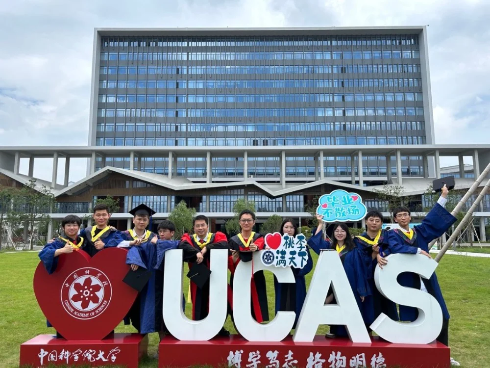
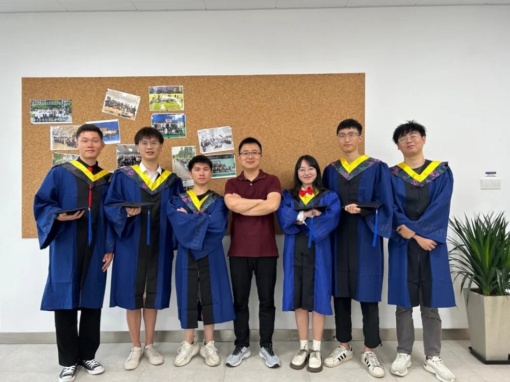
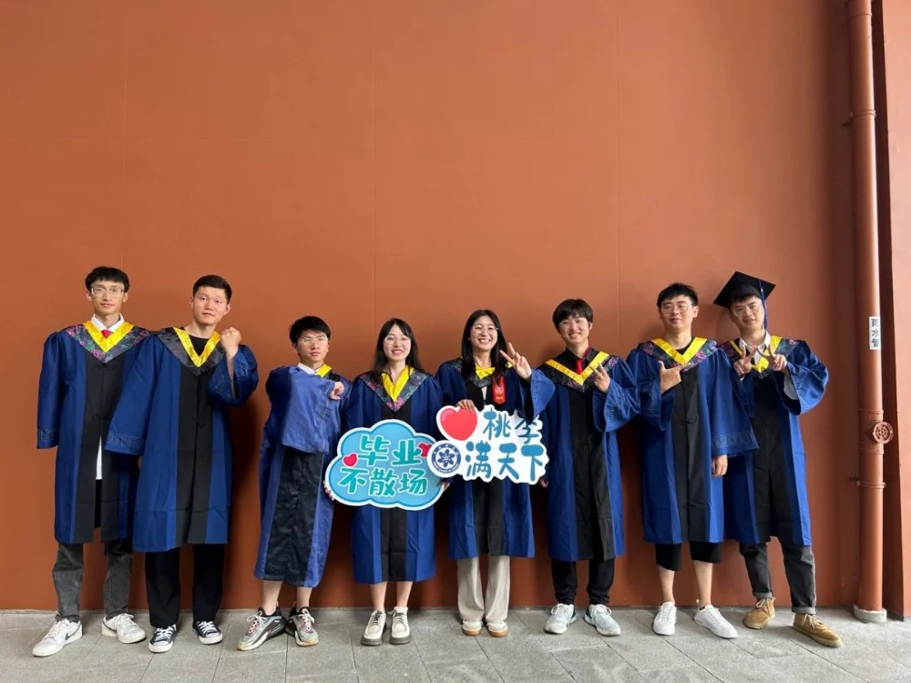

来自iMED毕业生的青春寄语
尊敬的各位老师，亲爱的同学们:
我是来自宁波团队的白艳苗，非常荣幸能够在这里写下这封来自青春的寄语。首先，请允许我代表宁波iMED团队2020级全体毕业生向IMED这个大家庭，向三年来给予我们悉心教导和精心栽培的各位老师表示最崇高的敬意;向三年来一起朝夕相处朋友们，表达最真最诚的祝福！
我们相识于2020年的秋天，相别于这个夏天。2020级的我们是不同寻常的一届，些许遗憾，赶上了近乎3年的疫情，又何其有幸，在IMED收获了最珍贵的回忆。回想起刚踏入这里的第一天，怀揣着满满的期待。而如今，在不知不觉中，我们已经走过了三个春夏秋冬，即将迎来毕业离校，这让我感慨万千。
我们依然记得第一次见到导师时的欣喜，记得老师们的循循善诱，敦敦教导，他们无论是在科研还是生活中，都以身作则，为团队成员树立了良好的榜样。在科研中，他们总是保持严谨认真的学术态度，从论文开题到定稿以来，给予我们耐心的指导和帮助，提出宝贵的修改意见，并细致地检查论文中的错误。他们为我们提供了很多锻炼机会，让我们在实践中不断成长。在生活中，他们教导我们许多为人处事的道理，让我们在学业和人生规划方面更加明确自己的目标与方向。在这里，我们遇到了最纯粹的、干净的、温暖的友情。那些朝夕相伴、相互包容、相互扶持，并肩作战，让我的求学之路充满欢声笑语的朋友们；那些优秀却不带优越感的师兄师姐们，在我们初入组时不遗余力的指导，为我们指明科研方向，热心的帮我们解决生活中各种困难；还有一群可爱的师弟师妹们，我们看过最蓝的海、爬过最高的山。细数着这些普通平常的日子，却离我们越来越远。这世界有那么多人，恰巧我们相遇，恰巧我们成为了朋友，是你们让那些艰辛的日子也同样让人振奋。
在这里，每个人都取得了不同的成就。有人取得了骄人的成绩，有人获得了宝贵的历练机会。我们学会了分析与思考，学会了忍耐与锻炼，学会了合作与竞争。时间不会忘记我们忙碌努力的身影，时间也再次证明了付出终会有回报。聚是一团火，散作满天星。我们即将踏上人生的另一段旅程，但是我们不会忘记我们在iMED的所学所感。未来还有更多人和事值得我们期待，相信我们每一个人都能在自己的岗位上作出一番成绩，展现我们iMEDer的独有风采!
携手共度三载，轻装策马青云路，人生从此取长风，我们跃入人海，各有风雨灿烂;愿我们在身处时代洪流之时，仍能听从内心的召唤，永远是肩上飞扬有风、心似滚烫火焰的有梦少年，所遇皆良善，所行皆坦途。
最后，再次感谢iMED为我们提供如此优越的学习环境，让我们认识许多既有能力又热情可爱的人;感谢实验室老师们辛勤耕耘，潜心科研为我们准备了如此厚实的知识盛宴;感谢同学们给予的鼓励和支持，让我们在科研路上充满温馨和感动，祝愿各位老师身体健康、工作顺利,祝愿各位同学前程似锦,师弟师妹们科研顺利,学业有成。
让我们怀着感恩之心，勇往直前，永远铭记母校培养我们的恩情。无论我们身处何方，无论前方的道路如何崎岖，我们都将带着iMED的荣誉和信念，为实现自己的梦想而努力奋斗。
谢谢大家！


